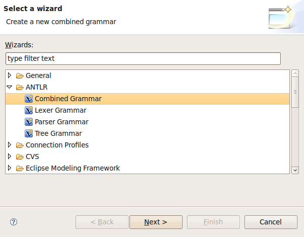
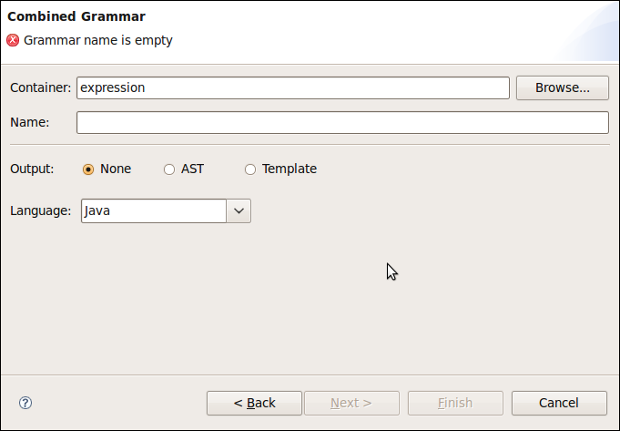
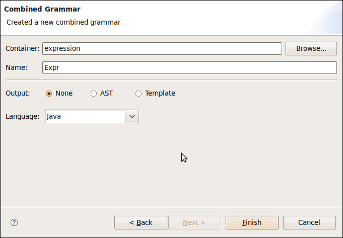
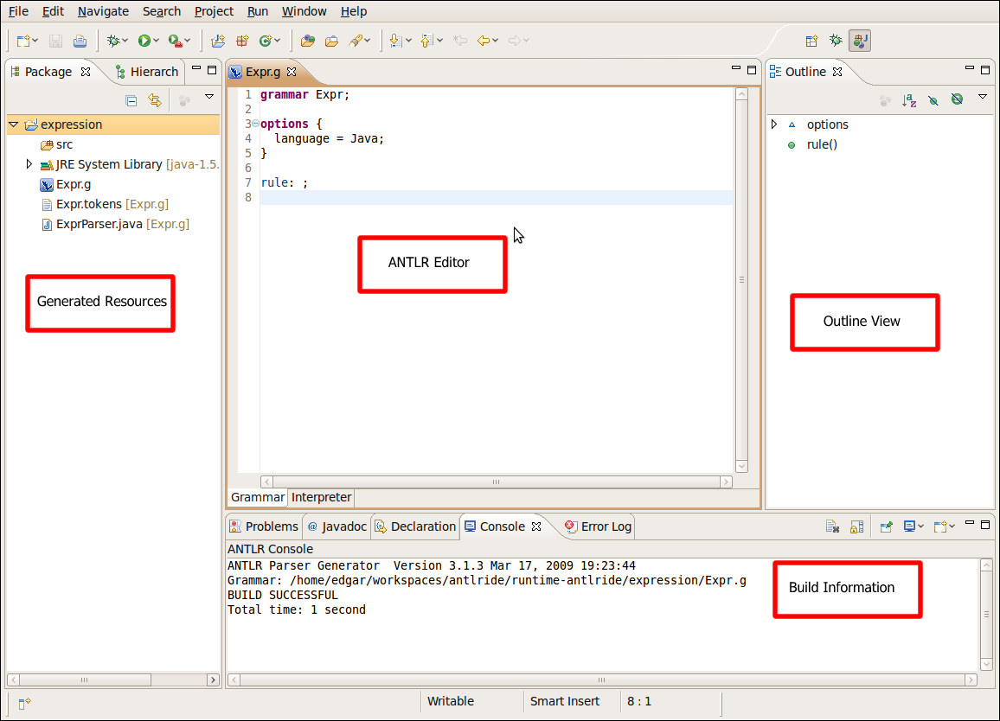
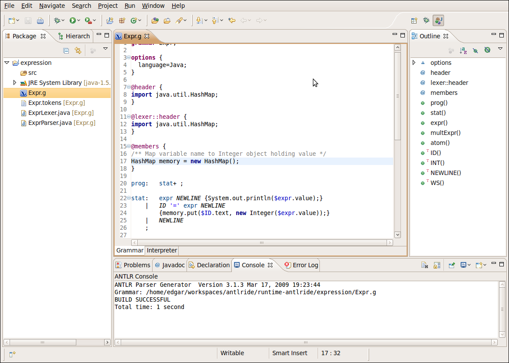

In this section, you will learn how to create a grammar with ANTLR IDE.



The ouput option: this option allow you to set the output option for your grammar.
The language option: this option allow you to set the language option for your grammar. You can choose one of the existing ones or type a new one.

The Outline view shows all the elements that compose the Expr grammar.
The Console View shows general information about the Expr grammar, for example the version of the ANTLR Parser Generator used to process the Expr grammar. You can customize this behavior in the Window > Preferences > ANTLR > Builder preference pages.
grammar Expr;
options {
language=Java;
}
@header {
import java.util.HashMap;
}
@lexer::header {
import java.util.HashMap;
}
@members {
/** Map variable name to Integer object holding value */
HashMap memory = new HashMap();
}
prog: stat+ ;
stat: expr NEWLINE {System.out.println($expr.value);}
| ID '=' expr NEWLINE
{memory.put($ID.text, new Integer($expr.value));}
| NEWLINE
;
expr returns [int value]
: e=multExpr {$value = $e.value;}
( '+' e=multExpr {$value += $e.value;}
| '-' e=multExpr {$value -= $e.value;}
)*
;
multExpr returns [int value]
: e=atom {$value = $e.value;} ('*' e=atom {$value *= $e.value;})*
;
atom returns [int value]
: INT {$value = Integer.parseInt($INT.text);}
| ID
{
Integer v = (Integer)memory.get($ID.text);
if ( v!=null ) $value = v.intValue();
else System.err.println("undefined variable "+$ID.text);
}
| '(' expr ')' {$value = $expr.value;}
;
ID : ('a'..'z'|'A'..'Z')+ ;
INT : '0'..'9'+ ;
NEWLINE:'\r'? '\n' ;
WS : (' '|'\t')+ {skip();} ;
